SimpleGraphics — це спеціалізована графічна бібліотека для мови програмування Python, створена для спрощення роботи з двовимірною (2D) комп'ютерною графікою. Її створив Бен Стефенсон (Ben Stephenson), викладач інформатики з Університеті Калгарі (University of Calgary, Канада), як навчальний інструмент для студентів перших курсів та початківців, які лише знайомляться з програмуванням.
Пакет працює поверх стандартної графічної бібліотеки Python під назвою tkinter. Головна мета створення SimpleGraphics — усунути складність синтаксису професійних графічних інструментів: вона дозволяє малювати фігури, керувати кольорами та обробляти прості події миші й клавіатури за допомогою всього кількох рядків зрозумілого коду.
Для тих, хто тільки починає свій шлях у програмуванні, ця бібліотека має низку ключових переваг:
Canvas), «пакування» віджетів чи роботу з контекстом малювання. Ви просто викликаєте функції: line(), rect(), setOutline().from SimpleGraphics import *
circle(200, 200, 150)
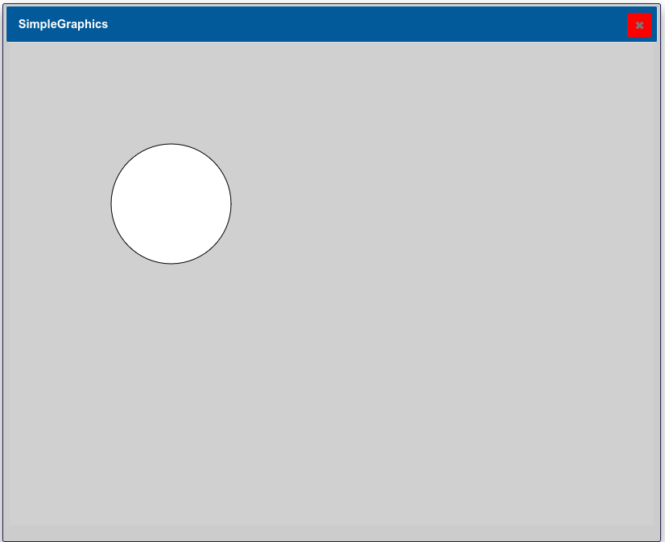
Вивчення графіки за допомогою SimpleGraphics закладає фундаментальні концепції, які використовуються у дорослих та професійних інструментах (таких як Pygame, Tkinter, Arcade, PyQt, Kivy або навіть HTML5 Canvas у веброзробці). Вона слугує ідеальною запорукою для подальшого навчання:
Математична система координат (де центр у точці (0, 0), а вісь Y йде вгору) у комп'ютерній графіці майже не використовується. SimpleGraphics привчає розробника до екранної системи координат, де (0, 0) — це лівий верхній кут, а Y росте вниз. Цей принцип абсолютно ідентичний у Pygame, веброзробці (CSS/Canvas) та UI-фреймворках. Користувач, який зрозумів це в SimpleGraphics, не матиме просторової дезорієнтації в майбутньому.
Вказівки керування кольором тла (background()), контуру (setOutline()) та заливки (setFill()) формують чітке розуміння того, як працює графічний конвеєр: спочатку ми обираємо «пензель», а вже потім малюємо фігуру. Цей «режим малювання» є базовим для низькорівневої графіки.
SimpleGraphics має прості функції для організації анімації та зчитування натискань клавіш і позиції миші. Проектуючи анімацію (наприклад, коло, що рухається по екрану завдяки зміні координати X у циклі while), користувач вивчає фундаментальний алгоритм комп'ютерної графіки:
Коли у майбутньому розробник перейде до Pygame чи Arcade, він побачить там абсолютно ті самі механізми (Game Loop, Event Handling, Blitting), але вже реалізовані за допомогою об'єктно-орієнтованого підходу. Перехід буде плавним, оскільки сама математична та алгоритмічна основа вже відпрацьована в SimpleGraphics.
Якщо ви використовуєте онлайнове середовище програмування ЄPython, тоді встановлювати нічого не потрібно — вона є складовою частиною цього середовища. У більшості інших середовищ бібліотеку потрібно встановити. SimpleGraphics доступна у глобальному сховищі PyPI під назвою simplegraphics-python, тому процес її встановлення зводиться до стандартного використання пакетного менеджера pip. Проте, залежно від операційної системи та обраного середовища розробки (IDE), цей процес має свої нюанси.
Thonny — це чудове середовище для початківців, яке має власний ізольований Python та графічний менеджер пакетів. Це найпростіший спосіб.
simplegraphics-python.IDLE використовує ту версію Python, яка встановлена безпосередньо у вашій операційній системі. Для встановлення бібліотеки потрібно скористатися терміналом/командним рядком вашої ОС.
PyCharm за замовчуванням створює окреме віртуальне середовище (venv) для кожного нового проєкту. Пакет потрібно встановлювати безпосередньо в проєкт.
Спосіб через графічний інтерфейс:
File → Settings, macOS: PyCharm → Settings).+ (або кнопку Install Sign у новіших версіях).simplegraphics-python.Спосіб через вбудований термінал:
pip install simplegraphics-python та натисніть Enter.VS Code працює через термінал і вимагає, щоб ви переконалися, що пакет встановлюється саме в той інтерпретатор, який зараз обрано в редакторі.
Ctrl+Shift+P / Cmd+Shift+P → Python: Select Interpreter).Ctrl + ~ або Terminal → New Terminal).(.venv)).pip install simplegraphics-pythonpip3 install simplegraphics-pythonЯкщо ви встановлюєте бібліотеку через глобальний термінал (для IDLE або VS Code без venv), команди відрізняються залежно від платформи.
Натисніть клавіші Win + R, введіть cmd та натисніть Enter (відкриється Командний рядок).
Введіть таку команду:
py -m pip install simplegraphics-python
(Використання утиліти py гарантує, що пакет встановиться для правильної версії Python, якщо їх у системі кілька.)
На комп'ютерах Mac стандартна команда python може викликати застарілі системні версії або видавати помилку, тому використовується python3.
Відкрийте програму Термінал (Terminal) (через Spotlight або папку Програми → Утиліти).
Виконайте команду:
python3 -m pip install simplegraphics-python
Важливо для macOS: оскільки бібліотека побудована на базі графічного рушія Tkinter, на деяких версіях macOS (особливо з чипами Apple Silicon M1/M2/M3) може виникнути помилка
ModuleNotFoundError: No module named '_tkinter'. Якщо це сталося, потрібно встановити підтримку Tcl/Tk через менеджер пакетів Homebrew, виконавши в Терміналі:brew install python-tk.
У деяких дистрибутивах Linux пакетний менеджер pip та модуль tkinter відключені від Python за замовчуванням з міркувань безпеки. Їх потрібно встановити через системний менеджер пакетів.
Відкрийте Термінал.
Оновіть репозиторії та встановіть pip разом із tkinter (приклад для Ubuntu/Debian):
sudo apt update
sudo apt install python3-pip python3-tk
Після цього встановіть саму бібліотеку графіки:
python3 -m pip install simplegraphics-python
Примітка: якщо система Linux видає помилку про «externally-managed-environment», рекомендується встановлювати бібліотеку всередині віртуального середовища (
venv), в Thonny IDE або скориставшись командоюpython3 -m pip install simplegraphics-python --break-system-packages.
Після встановлення створіть новий файл Python (наприклад, test_graphics.py) та запустіть наступний мінімальний код:
from SimpleGraphics import *
# Малюємо синє коло по центру
background("white")
setFill("blue")
circle(400, 300, 100)
# Малюємо лінію
setOutline("red")
line(0, 0, 400, 300)
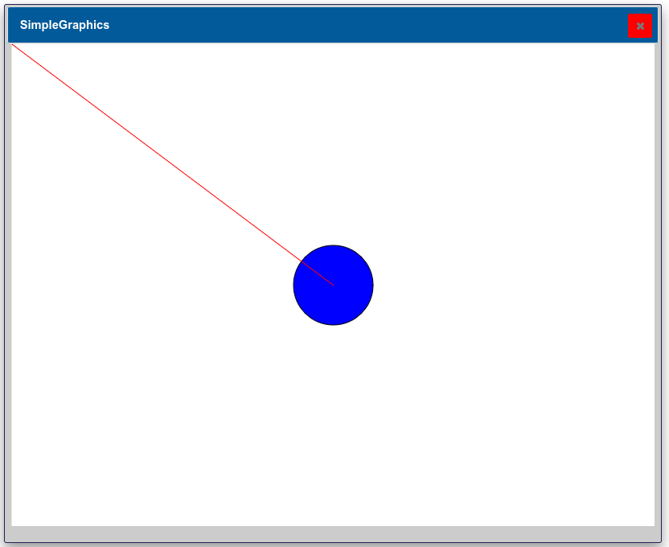
Якщо перед вами з'явилося вікно з синім колом та червоною лінією — вітаємо, бібліотека встановлена правильно і готова до роботи!Система координат у графічній бібліотеці SimpleGraphics базується на стандартній екранній (комп'ютерній) системі координат. Вона суттєво відрізняється від традиційної декартової системи координат, яку вивчають у шкільному курсі математики.
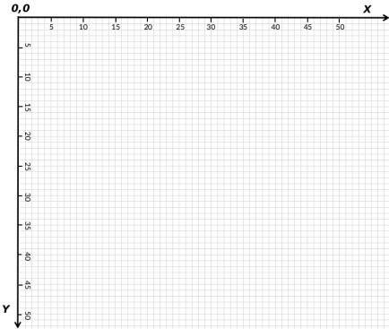
Приклад: точка з координатами (0, 0) — це найверхніший лівий піксель вікна. Точка (100, 200) означає, що об'єкт зміщено на 100 пікселів вправо та на 200 пікселів вниз від верхнього лівого кутка.
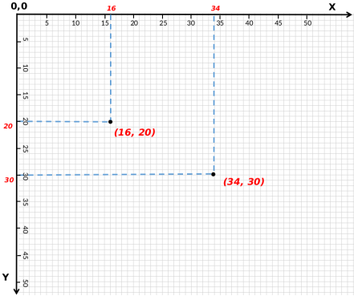
resize(width, height).Різні геометричні фігури використовують координати по-різному.
А. Лінії (line). Для малювання лінії потрібні дві пари координат — початкова точка (x1, y1) та кінцева точка (x2, y2):
line(50, 50, 200, 150) # Проводить лінію з точки (50, 50) до точки (200, 150)
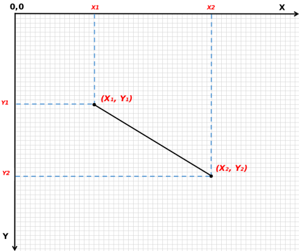
Б. Прямокутники (rect) та еліпси (ellipse). Для цих фігур початкові координати (x, y) задають верхній лівий кут уявної коробки (габаритного контейнера), в яку вписується фігура. Далі вказуються її ширина (width) та висота (height):
rect(100, 100, 200, 50) # Малює прямокутник, верхній лівий кут якого в (100, 100)
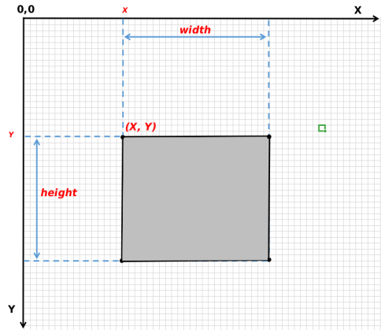
Оскільки вісь Y напрямлена вниз, прямокутник буде рости від точки (100, 100) вниз та вправо. Нижній правий кут цього прямокутника матиме координати (100 + 200, 100 + 50) = (300, 150).
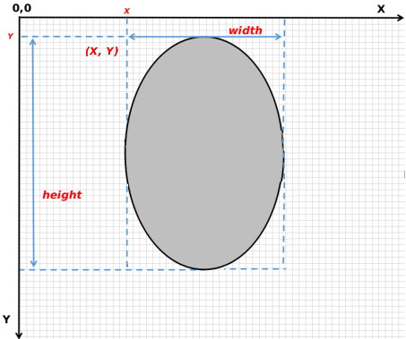
В. Текст (text). При виведенні тексту координати (x, y) за замовчуванням вказують на позицію розміщення тексту, проте SimpleGraphics дозволяє налаштовувати «якір» (anchor) відносно сторін світу ("n", "s", "e", "w"), щоб чітко керувати тим, де саме текст опиниться відносно заданої координатної точки.
Така логіка (нуль у верхньому лівому кутку) є історичним стандартом для більшості графічних систем (включаючи tkinter, на базі якого побудована SimpleGraphics, а також HTML Canvas, Java Swing тощо). Це пов'язано з тим, як старі ЕЛТ-монітори формували зображення — електронний промінь сканував екран рядок за рядком, починаючи саме з лівого верхнього кутка і рухаючись вниз.
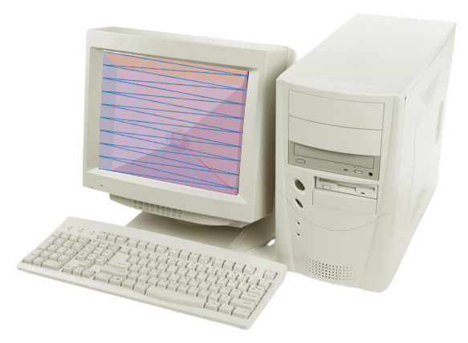
Після імпорту бібліотеки за допомогою команди from SimpleGraphics import * автоматично створюється графічне вікно розміром 800 × 600 пікселів.
Малювання круглих фігур виконується за допомогою функції circle().
from SimpleGraphics import *
# Малюємо коло
circle(400, 300, 100)
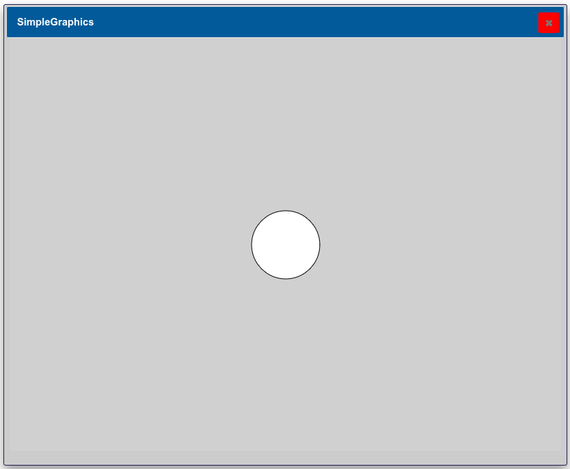
Пояснення аргументів circle(x, y, diameter):
x (перший аргумент, тут 400) — координата по горизонталі для лівого краю уявного квадрата, в який вписується коло.y (другий аргумент, тут 300) — координата по вертикалі для верхнього краю уявного квадрата.diameter (третій аргумент, тут 100) — діаметр кола в пікселях.Перш ніж переходити до складніших фігур, важливо навчитися фарбувати їх та змінювати товщину контуру. За замовчуванням фігури малюються чорним контуром без заливки. Змінити це можна за допомогою таких вказівок:
background("колір") — повністю перефарбовує тло всього вікна.setOutline("колір") — встановлює колір ліній та контурів для усіх фігур, які будуть малюватися після цієї команди.setFill("колір") — встановлює колір заливки (внутрішньої частини) для всіх наступних фігур.setWidth(пікселі) — змінює товщину ліній контуру.setColor("колір") — швидкий спосіб встановити водночас і колір контуру, і колір заливки однією командою (якщо не потрібно, щоб контур і заливка відрізнялися кольором).from SimpleGraphics import *
background("lightgray") # Робимо тло вікна сірим
setWidth(3) # Збільшуємо товщину ліній контуру до 3 пікселів
setOutline("red") # Наступні фігури матимуть червону межу
setFill("blue") # Наступні фігури будуть синіми всередині
# Тепер коло буде синім із товстим червоним контуром на сірому тлі
circle(200, 200, 80)
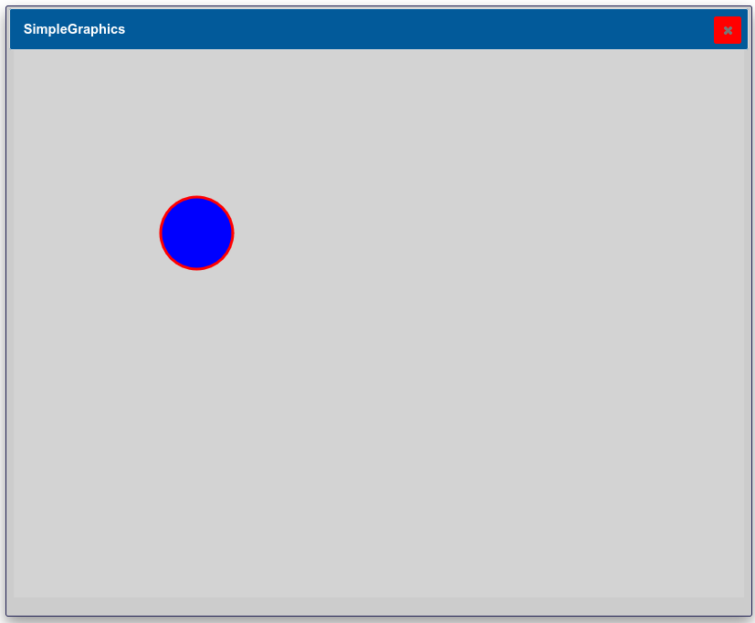
Тепер, коли ми вміємо налаштовувати кольори, розглянемо інші базові вказівки побудови в логічному порядку — від простих ліній до складних багатокутників.
Прямокутник — rect(x, y, width, height). Параметри x та y вказують на розташування верхнього лівого кута прямокутника, а width та height задають його ширину й висоту.
from SimpleGraphics import *
setFill("yellow")
# Малюємо жовтий прямокутник
rect(50, 50, 200, 100) # Початок у (50, 50), ширина 200, висота 100
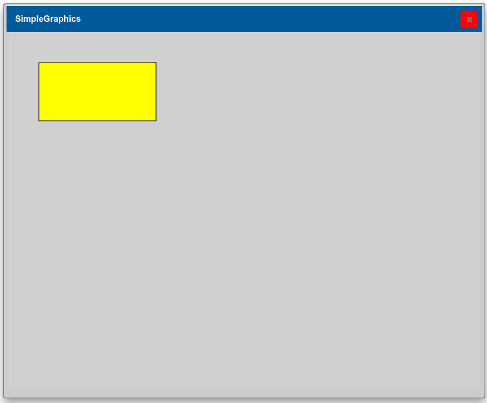
Лінія — line(x1, y1, x2, y2). Проводить пряму лінію між двома точками на екрані. (x1, y1) — це координати початку лінії, а (x2, y2) — координати її кінця. Якщо більше, ніж одна пара координат — будується ламана:
from SimpleGraphics import *
# Проводимо ламану
line(10, 10, 100, 100, 200, 10, 300, 100, 400, 10)
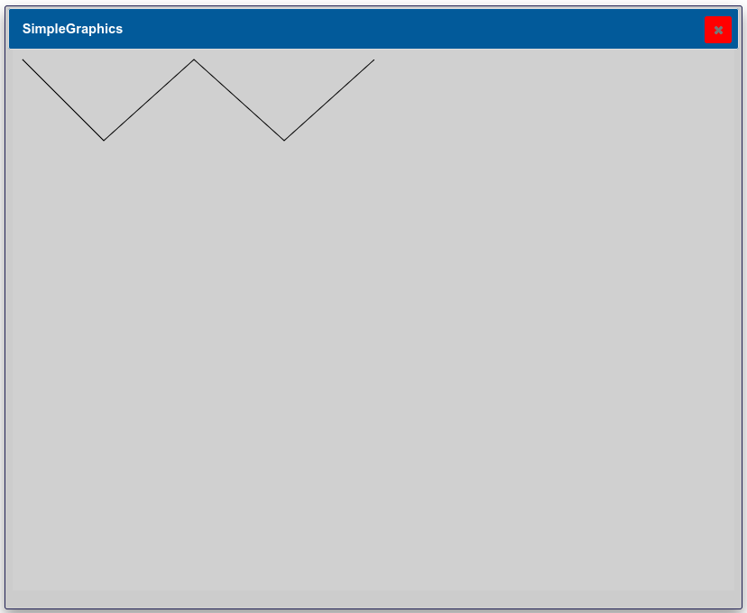
Еліпс — ellipse(x, y, width, height). Параметри x та y вказують на розташування верхнього лівого кута уявного прямокутника, що містить це еліпс, а width та height задають його ширину й висоту.
from SimpleGraphics import *
setFill("yellow")
# Малюємо жовтий еліпс(овал)
ellipse(50, 50, 200, 100) # Початок у (50, 50), ширина 200, висота 100
setFill("pink")
# Малюємо рожевий еліпс
ellipse(350, 50, 100, 200) # витягнутий вертикально
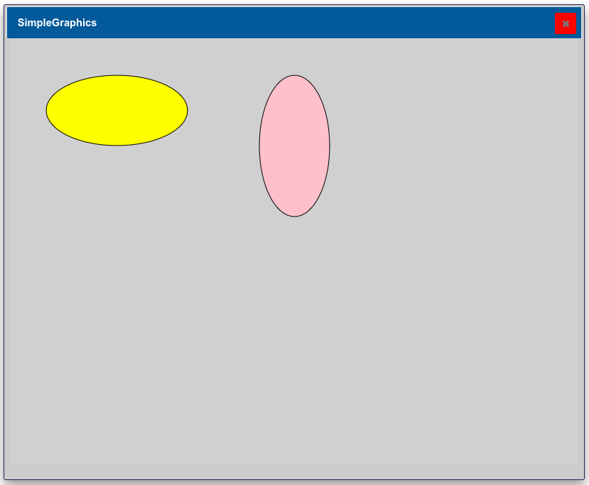
Дуга та сектор — arc() і pieSlice(). Вони приймають параметри (x, y, width, height, start_angle, extent). Спочатку визначається уявний прямокутник (як для еліпса), а потім вирізається потрібна частина за кутами. start_angle — початковий кут у градусах, extent — величина(розмах) дуги.
arc — малює лише дугу (частину кола).pieSlice — малює заповнений сектор круга.from SimpleGraphics import *
background("lightgray")
setFill("lightgray")
# Дуга з початковим кутом 45 градусів та розмахом 90 градусів
arc(200, 300, 200, 200, 45, 90)
setFill("blue")
# Сектор із такими ж параметрами (буде зафарбований синім кольором)
pieSlice(350, 300, 200, 200, 45, 90)
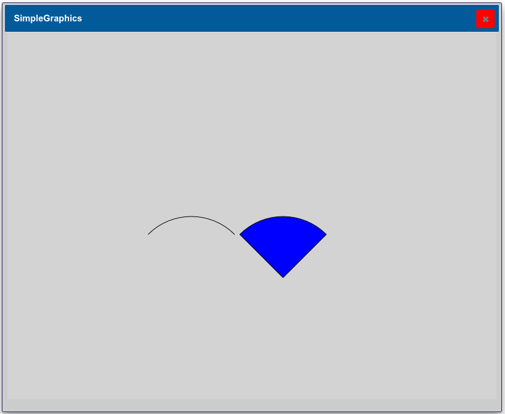
Багатокутник — polygon(x1, y1, x2, y2, x3, y3, ...). Дозволяє будувати фігури з будь-якою кількістю кутів (трикутники, зірки, ромби). Ви просто по черзі перераховуєте пари координат усіх вершин, які будуть автоматично з'єднані між собою, а остання - точка з першою.
from SimpleGraphics import *
setFill("green")
# Передаємо 3 пари координат, щоб отримати зелений трикутник
polygon(10, 10, 50, 250, 200, 100)
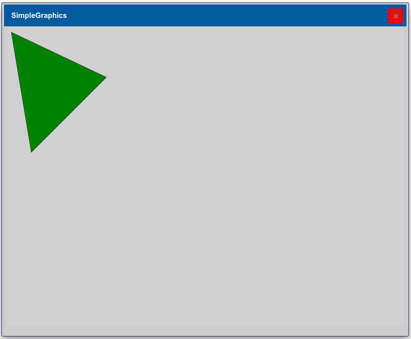
Плавні криві — curve() та blob(). Ці функції створюють заокруглені, хвилясті лінії через задані точки.
curve — малює відкриту плавну лінію.blob — автоматично замикає початкову і кінцеву точки кривої та заповнює фігуру зсередини.from SimpleGraphics import *
# Малювання звичайної кривої
curve(100, 100, 150, 150, 200, 100)
# Малювання заповненої кривої
blob(200, 200, 300, 400, 400, 200)
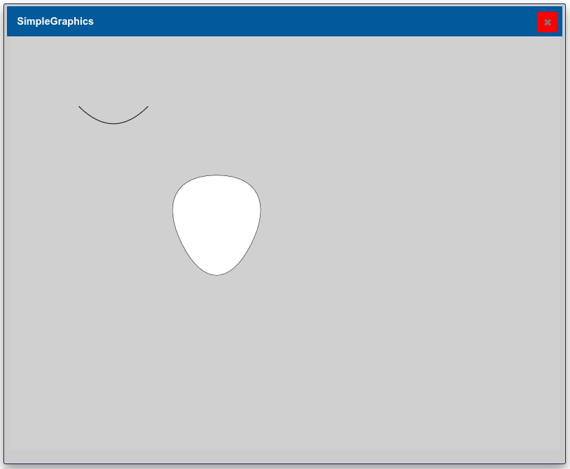
Текст — text(x, y, "текст", align="center"). Виводить напис на екран у вказаних координатах (x, y). За допомогою параметра align можна вказати вирівнювання (наприклад, по центру).
from SimpleGraphics import *
text(400, 300, "Привіт, SimpleGraphics!", align="center")
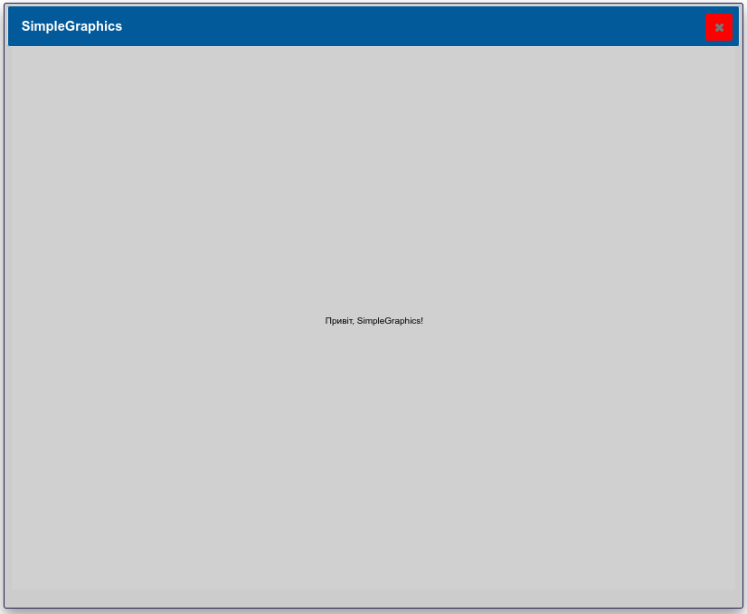
Щоб створити повноцінний малюнок, ми поєднуємо примітиви.
Важливе правило: фігури, які записані в коді нижче, будуть малюватися поверх тих, що записані вище.
Зразок 1. Побудова «Будиночка». Малюнок складається з прямокутної стіни, трикутного даху (через polygon), прямокутних дверей та круглого віконця.
from SimpleGraphics import *
# Вікно
resize(700, 500)
background("skyblue")
# Земля
setColor("green")
rect(0, 280, 800, 260)
# Сонце
setColor("yellow")
circle(50, 50, 60)
# Будинок
setColor("gold")
rect(130, 190, 350, 180)
# Дах
setFill("brown")
polygon(130, 190,305, 80,480, 190)
# Двері
setColor("chocolate")
rect(260, 230, 90, 140)
setWidth(4)
# Ліве вікно
setColor("white")
rect(150, 230, 90, 90)
setFill("aqua")
rect(150, 230, 90, 90)
setColor("white")
line(195, 230, 195, 320)
line(150, 275, 240, 275)
# Праве вікно
setColor("white")
rect(370, 230, 90, 90)
setFill("aqua")
rect(370, 230, 90, 90)
setColor("white")
line(415, 230, 415, 320)
line(370, 275, 460, 275)
# Дерево - стовбур
setColor("brown")
rect(600, 180, 25, 190)
# Крона
setColor("olivedrab")
ellipse(550, 20, 120, 240)
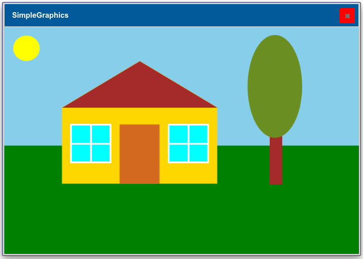
Зразок 2. Побудова «Кораблика». Тут ми використовуємо багатокутник (polygon) для створення форми трапеції (корпусу човна), лінію для щогли та заповнену криву (blob) для створення ефекту хвиль моря.
from SimpleGraphics import *
background("skyblue")
# Корпус корабля
setColor("red")
polygon(60, 260,
340, 260,
300, 300,
100, 300)
# Щогла
setColor("black")
setWidth(3)
line(180, 40, 180, 260)
# Велике вітрило
setColor("cyan")
polygon(180, 80,
180, 240,
300, 240)
# Маленьке вітрило
setColor("blue")
polygon(180, 120,
180, 240,
90, 240)
# Прапорець
setColor("yellow")
rect(180, 45, 35, 10)
# Море
setColor("blue")
rect(0, 300, 800, 300)
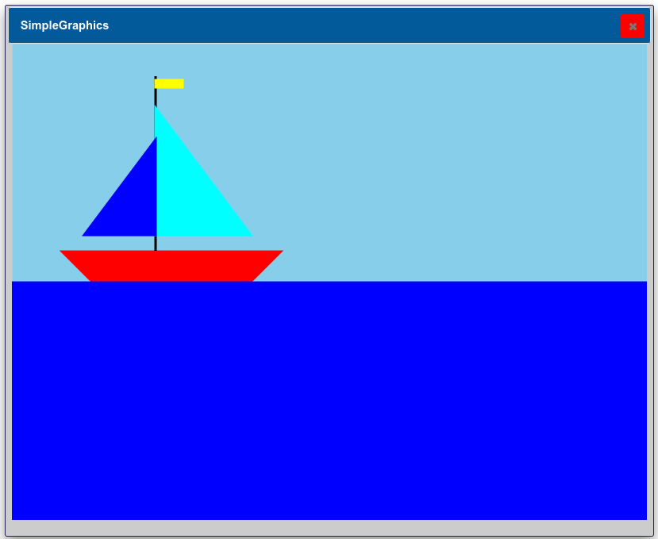
Розглянемо ще кілька корисних прикладів, які доповнюють базовий набір функцій SimpleGraphics: стилізовані лінії, ламані та згладжені криві, складні фігури за списком координат, прямокутники, що перекриваються, еліпс і багатокутник-зірку.
Три лінії, намальовані в різних стилях. Побачимо, як змінювати колір та товщину за допомогою setColor() та setWidth().
from SimpleGraphics import *
# Встановлюємо зелений фон для всього вікна
background("springgreen")
# Лінія 1
setWidth(3)
setColor("black")
line(20, 20, 180, 20)
# Лінія 2
setWidth(5)
setColor("red")
line(280, 20, 480, 270)
# Лінія 3 (Товста лінія)
setWidth(15)
setColor("darkblue")
line(150, 170, 150, 370)
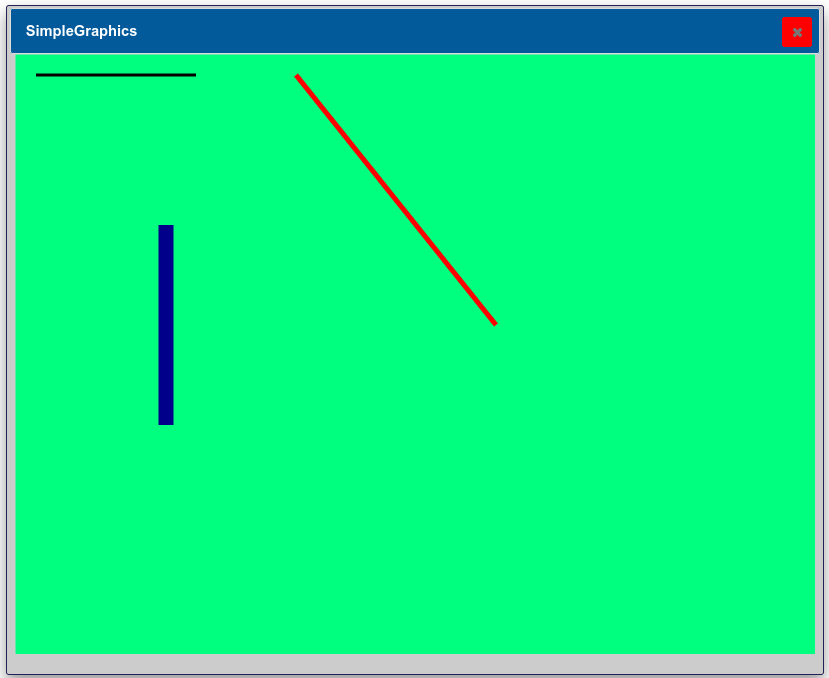
Лінії не обов'язково мають бути прямими. Більш загальний тип лінії може складатися з багатьох прямих сегментів — а якщо замінити line() на curve(), ті самі точки утворять плавний, згладжений вигин.
from SimpleGraphics import *
setWidth(3)
setColor("violet")
# Різкий згин (передаємо більше двох точок)
line(50, 10, 20, 80, 250, 160)
setColor("green")
# Кривий згин (функція curve() будує згладжену криву)
curve(50, 10, 20, 80, 250, 160)
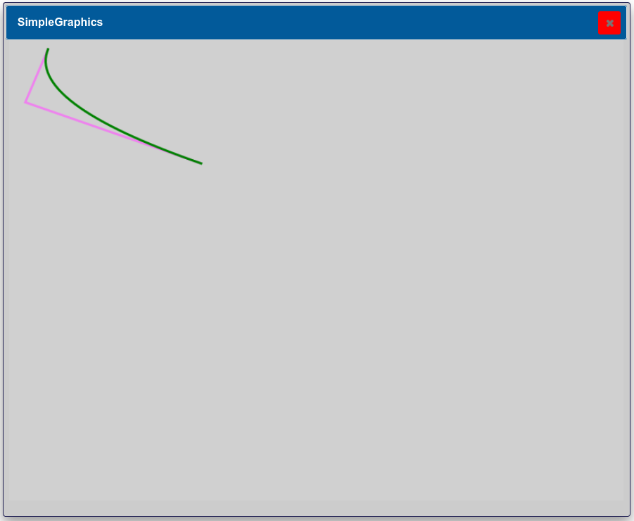
Завдання полягає в тому, щоб намалювати складну фігуру, використовуючи списки координат, попередньо виміряні, наприклад, з ескізу на паперу.
from SimpleGraphics import *
# Координати, виміряні з ескізу на папері
vine_x = [23, 20, 11, 9, 29, 52, 56, 39, 24, 32, 53, 69, 63, 47, 35, 35, 51, 82, 116, 130, 95, 67, 95, 114, 95, 78, 95, 103, 95, 85, 95, 94]
vine_y = [36, 44, 39, 22, 16, 32, 56, 72, 91, 117, 125, 138, 150, 151, 140, 123, 107, 92, 70, 41, 5, 41, 66, 41, 24, 41, 53, 41, 33, 41, 41, 39]
# Об'єднуємо списки X та Y в один черговий список
pts = []
for i in range(len(vine_x)):
pts.append(vine_x[i])
pts.append(vine_y[i])
# Малюємо виноградну лозу як згладжену криву
curve(*pts)
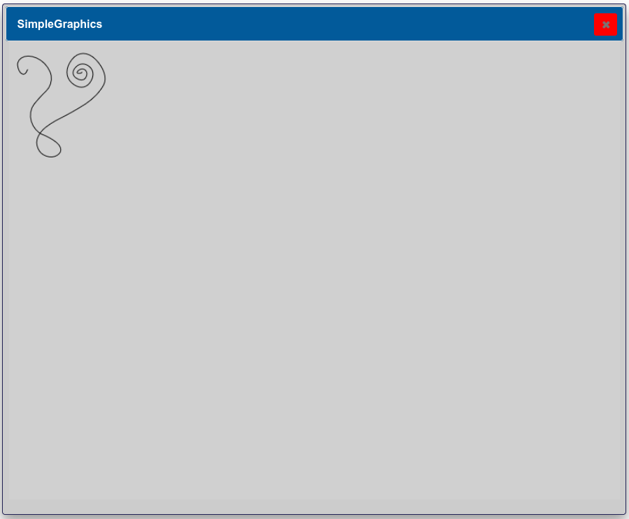
Якщо намалювати кілька прямокутників зі зсувом один за одним, кожен наступний буде перекривати попередній.
from SimpleGraphics import *
# Темно-синій прямокутник
setColor("darkblue")
rect(10, 30, 70, 90)
# Темно-червоний прямокутник (зміщений, малюється другим)
setColor("darkred")
rect(30, 50, 70, 90)
# Темно-зелений прямокутник (малюється останнім, тому "зверху")
setColor("darkgreen")
rect(50, 70, 70, 90)
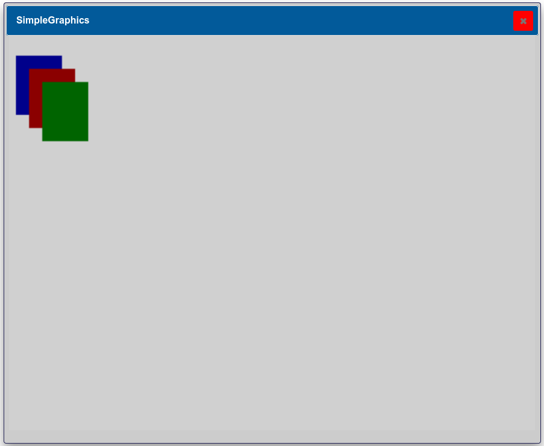
Найкращий спосіб намалювати коло або еліпс — використати методи ellipse(x, y, w, h) або circle(x, y, d). На відміну від кола, еліпс дозволяє окремо вказати ширину та висоту габаритного прямокутника.
# kolo.py
from SimpleGraphics import *
setColor("cyan")
# ellipse малює еліпс, вписаний у прямокутник (x, y, ширина, висота)
ellipse(20, 20, 100, 100)
# circle малює коло за центром та діаметром
# circle(70, 70, 100)
Текст може бути різноманітним, тож нам потрібно мати можливість керувати обраними шрифтами, розміром, кольором та розміщенням. SimpleGraphics спрощує це, надаючи функції text() та setFont().
from SimpleGraphics import *
# За замовчуванням текст малюється чорним кольором
text(150, 20, "Розмір тексту за замовчуванням виглядає як 10 пунктів")
Колір та стиль тексту керуються відповідними функціями setColor() та setFont().
Функція setFont() приймає назву шрифту, розмір у пунктах і, за потреби, стиль ("bold", "italic").
from SimpleGraphics import *
setColor("red")
setFont("SansSerif", 20)
text(200, 20, "Звичайний текст SansSerif 20")
setColor("blue")
setFont("Arial", 20)
text(200, 50, "Звичайний текст Arial 20")
setColor("green")
setFont("Courier", 20, "bold")
text(200, 80, "Напівжирний текст Courier 20")
setColor("purple")
setFont("BookAntiqua", 20, "italic")
text(200, 110, "Курсив BookAntiqua 20")
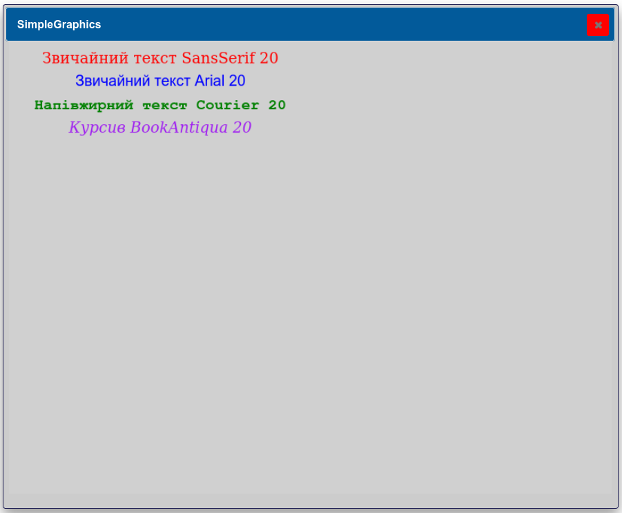
Розмістити текст точно там, де ви хочете, може бути складно через висоту шрифту та міжсимвольний інтервал. Функція text(x, y, what) за замовчуванням центрує текст (align="c") відносно точки (x, y). Ви можете змінити вирівнювання, передавши параметр align="w" (ліворуч), align="e" (праворуч) тощо.
from SimpleGraphics import *
# Довгий текст
jolly_text = "Книги – морська глибина: Хто в них пірне аж до дна,той, хоч і труду мав досить, дивнії перли виносить"
setColor("blue")
setFont("Arial", 12)
# Вирівнювання по лівому краю відносно точки (120, 40)
text(220, 40, jolly_text, align="w")
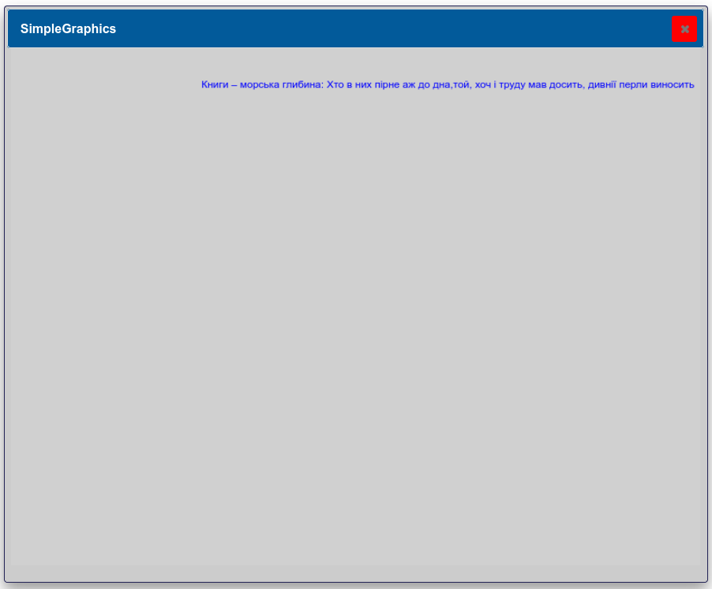
Дізнаємося, які шрифти доступні, та виведемо їхній зразок, перебираючи список у циклі.
from SimpleGraphics import *
# Список поширених шрифтів
shryfty = ["Arial", "Courier", "Times New Roman", "Verdana", "Georgia"]
zrazok = ": abcdefghij_HIJK_12340"
y_pozyciia = 30
setColor("black")
for shryft in shryfty:
setFont(shryft, 24)
# Вирівнюємо по лівому краю, щоб текст йшов рівними стовпчиками
text(50, y_pozyciia, f"{shryft} {zrazok}", align="w")
y_pozyciia += 50
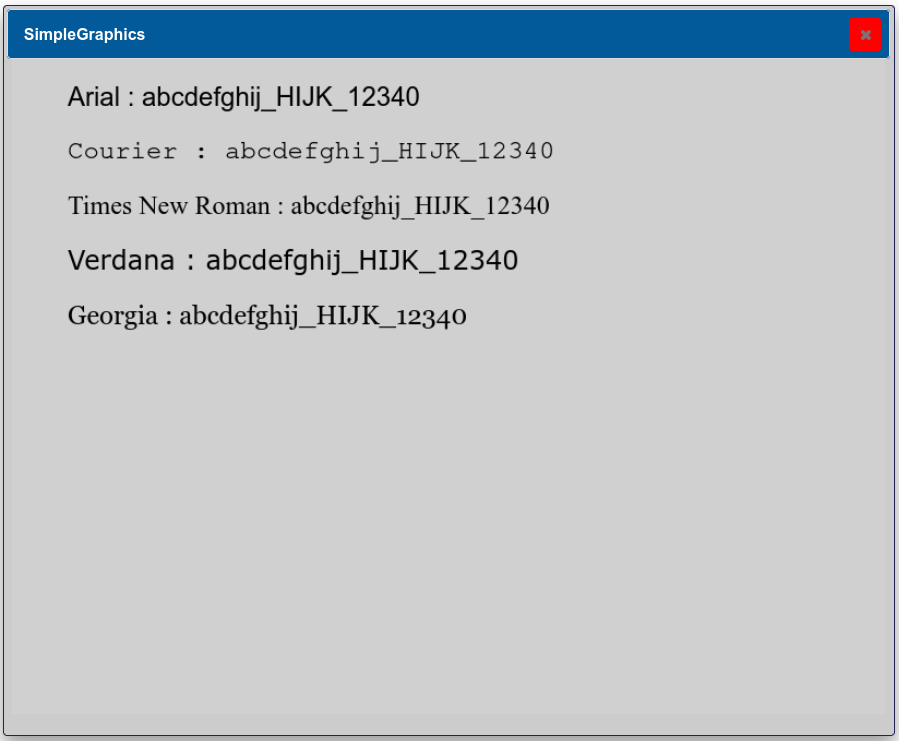
| Категорія | Функції / методи | Призначення |
|---|---|---|
| 1. Малювання примітивів | line(), curve(), blob(), rect(), ellipse(), circle(), polygon(), arc(), pieSlice(), text(), drawImage() |
Малювання геометричних фігур, тексту та зображень |
| 2. Налаштування малювання | setColor(), setOutline(), setFill(), setWidth(), setArrow(), setArrowShape(), setCapStyle(), setJoinStyle(), setFont() |
Зміна кольорів, товщини ліній, шрифтів та інших параметрів |
| 3. Робота з полотном (Canvas) | background(), clear(), resize(), getWidth(), getHeight(), update(), setAutoUpdate() |
Керування вікном та полотном для малювання |
| 4. Керування об'єктами | move(), delete(), scale(), putUp(), putDown(), itemConfig(), checkCollision() |
Переміщення, масштабування, зміна властивостей та перевірка зіткнень |
| 5. Робота із зображеннями | createImage(), loadImage(), putPixel(), drawImage() |
Створення, завантаження та відображення зображень |
| 6. Робота з мишею | mousePos(), mouseX(), mouseY(), leftButtonPressed(), middleButtonPressed(), rightButtonPressed(), getMouseEvent(), peekMouseEvent(), clearMouseEvents() |
Отримання координат миші, стану кнопок та подій |
| 7. Робота з клавіатурою | getTyped(), peekTyped(), getTypedLine(), peekTypedLine(), getKeys(), peekKeys(), getHeldKeys() |
Отримання введеного тексту та натиснутих клавіш |
| 8. Анімація | doAnimate(), noAnimate(), isAnimate(), animationTime() |
Створення та керування анімацією |
| 9. Керування вікном | setWindowTitle(), close(), closed() |
Зміна заголовка, закриття вікна та перевірка його стану |
| 10. Інформаційні функції | version(), lineSpace(), textWidth() |
Отримання версії бібліотеки та інформації про текст |
rect(), circle(), setFill() та setOutline().from SimpleGraphics import *
# 1. Малюємо корпус світлофора
setFill("darkgray")
rect(120, 50, 160, 440)
# ДІАМЕТР для всіх кіл буде 100 пікселів
diameter = 100
# 2. Червоне світло (верхнє)
setFill("red")
circle(200, 130, diameter)
# 3. Жовте світло (середнє)
setFill("yellow")
circle(200, 270, diameter)
# 4. Зелене світло (нижнє)
setFill("green")
circle(200, 410, diameter)
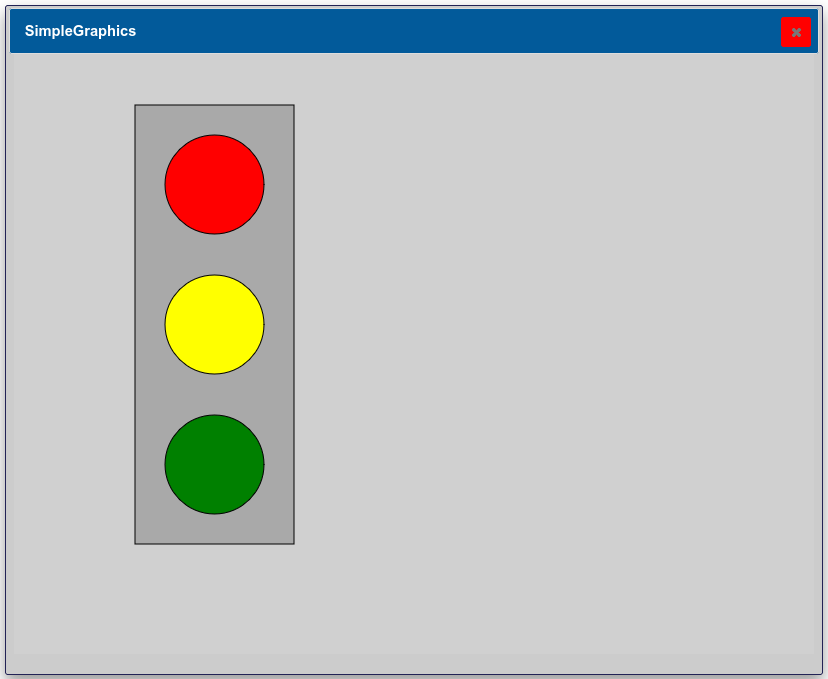
rect() намалюйте прямокутник, поділений на дві горизонтальні смуги — синю зверху та жовту знизу.from SimpleGraphics import *
# Розміри прапора (пропорція 2:3)
flag_width = 450
flag_height = 300
# Початкова точка малювання
start_x = 75
start_y = 75
# Вираховуємо висоту однієї смуги (половина від загальної висоти)
stripe_height = flag_height / 2
# 1. Малюємо верхню синю смугу
setColor("blue")
rect(start_x, start_y, flag_width, stripe_height)
# 2. Малюємо нижню жовту смугу
setColor("yellow")
rect(start_x, start_y + stripe_height, flag_width, stripe_height)
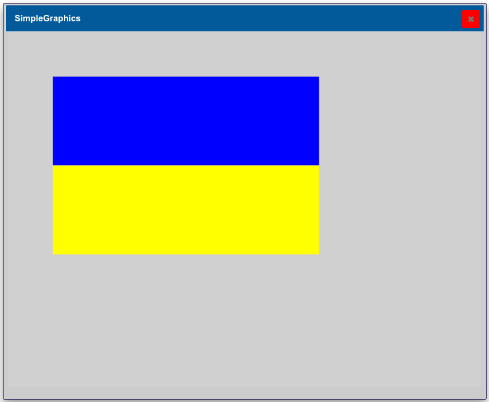
for та функцію random (модуль random), намалюйте на темному тлі 50 маленьких «зірок» у випадкових місцях вікна.import random
from SimpleGraphics import *
# Створюємо функцію для малювання однієї зірки
def star(x, y, size):
setFill("white")
circle(x, y, size)
# --- Основна програма ---
background("darkblue")
# Цикл для малювання 150 випадкових зірок
for i in range(150):
# Генеруємо випадкові координати у межах нашого вікна
random_x = random.randint(0, 800)
random_y = random.randint(0, 600)
# Генеруємо випадковий розмір (діаметр від 2 до 6 пікселів)
random_size = random.randint(2, 6)
# Викликаємо нашу функцію для малювання зірки
star(random_x, random_y, random_size)
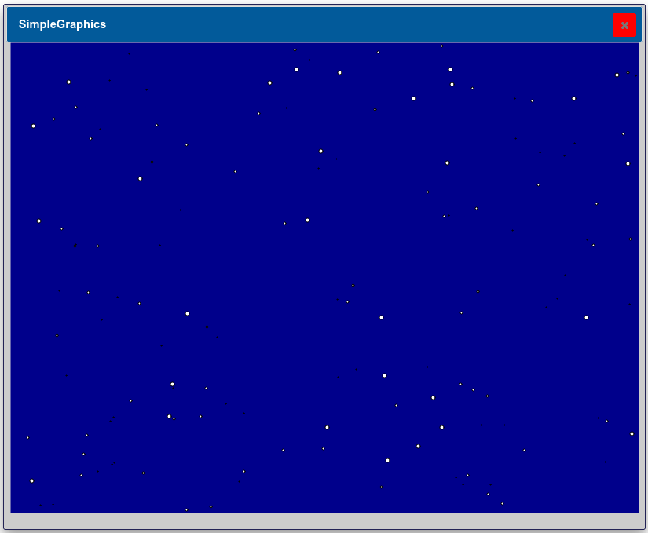
Намалюйте власну складніші малюнки (наприклад, машину, дерево чи обличчя смайлика), використовуючи функції малювання.
Іграшковий автомобіль:
from SimpleGraphics import *
# Корпус автомобіля
setColor("blue")
rect(80, 180, 562, 150)
# Передня частина
polygon(640, 180,
700, 210,
730, 330,
640, 330)
# Дах
polygon(180, 180,
240, 70,
480, 70,
560, 180)
# Ліве вікно
setColor("lightcyan")
polygon(215, 180,
245, 90,
360, 90,
360, 180)
# Праве вікно
polygon(390, 180,
390, 90,
490, 90,
555, 180)
# Колеса
setColor("black")
ellipse(120, 260, 140, 140)
ellipse(520, 260, 140, 140)
# Диски
setColor("lightgray")
ellipse(160, 300, 60, 60)
ellipse(560, 300, 60, 60)
# Фара
setColor("khaki")
pieSlice(670, 210, 40, 60, 300, 120)
# Задній ліхтар
setColor("orangered")
rect(80, 245, 20, 35)
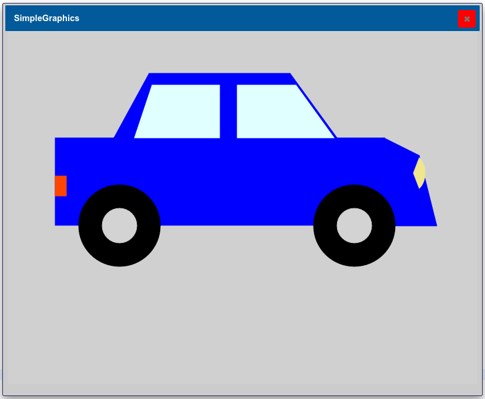
Дерево:
from SimpleGraphics import *
# 1. Налаштовуємо тло
background("lightblue") # блакитне небо
# 2. Малюємо стовбур дерева (полігон)
# Задаємо коричневий колір
setColor("saddlebrown")
# Координати точок для основи стовбура (розширюється донизу)
polygon(370, 600, 430, 600, 420, 400, 380, 400)
# 3. Малюємо великі гілки
# Ліва гілка
polygon(385, 430, 340, 370, 355, 360, 390, 410)
# Права гілка
polygon(415, 440, 460, 380, 475, 390, 410, 420)
# 4. Малюємо крону дерева
# Використовуємо темно-зелений колір
setColor("forestgreen")
# Крона
circle(400, 310, 220)
circle(310, 290, 160)
circle(490, 300, 170)
circle(400, 220, 150)
circle(290, 370, 110)
circle(500, 380, 120)
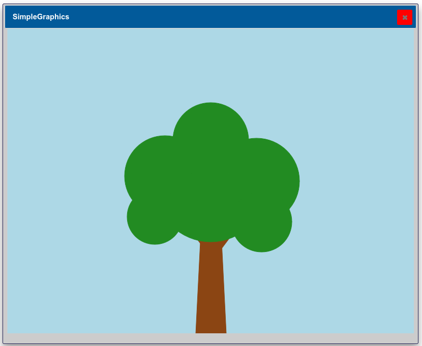
Смайлик:
from SimpleGraphics import *
setFill("yellow")
setWidth(2)
circle(200, 200, 170)
# --- Посмішка ---
arc(150, 150, 102, 102, 180, 180)
# --- Очі ---
setFill("black")
circle(166, 166, 17)
circle(234, 166, 17)
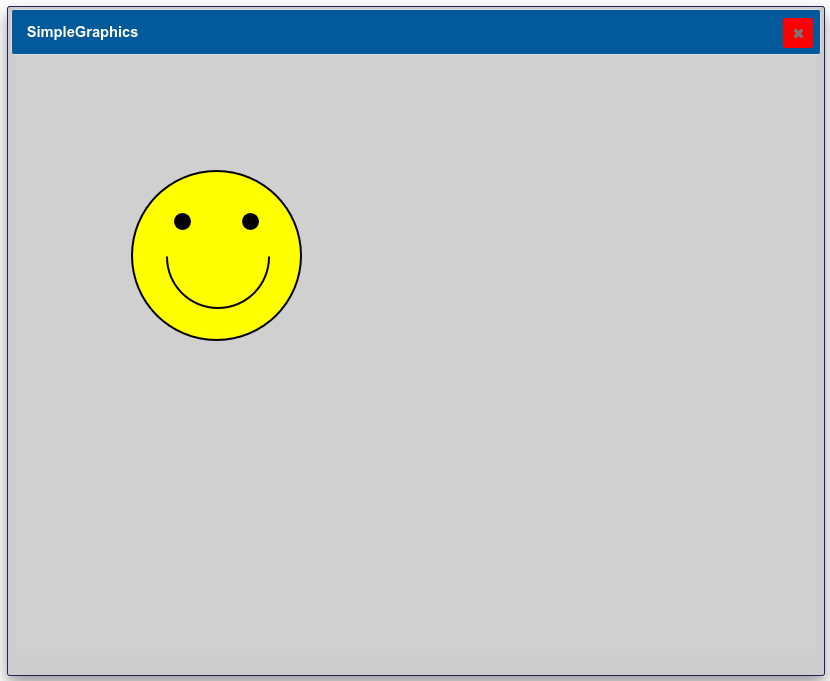
text() та setFont().from SimpleGraphics import *
# 1. Налаштовуємо темно-синє нічне небо
background("midnightblue")
# 2. Малюємо стовбур ялинки
setColor("saddlebrown")
rect(280, 500, 40, 80) # x, y, ширина, висота
# 3. Малюємо крону ялинки (три яруси трикутників за допомогою polygon)
setColor("forestgreen")
# Нижній великий ярус (ліва, верхня, права точки)
polygon(150, 500, 300, 350, 450, 500)
# Середній ярус
polygon(180, 380, 300, 250, 420, 380)
# Верхній ярус
polygon(210, 270, 300, 150, 390, 270)
# 4. Прикрашаємо ялинку іграшками
# Червоні кульки
setFill("red")
circle(300, 180, 16)
circle(220, 480, 18)
circle(350, 360, 16)
# Жовті кульки
setFill("gold")
circle(260, 260, 16)
circle(380, 470, 18)
circle(250, 370, 16)
# Сині кульки
setFill("deepskyblue")
circle(340, 250, 16)
circle(300, 450, 18)
circle(200, 375, 16)
# Верхівка — зробимо велику золоту кулю на верхівці
setFill("orange")
circle(300, 145, 24)
# 5. Додаємо напис
setColor("white")
setFont("Arial",28)
# text(x, y, string) — виводимо напис вгорі
text(300, 40,"Вітаємо з Новим Роком!")
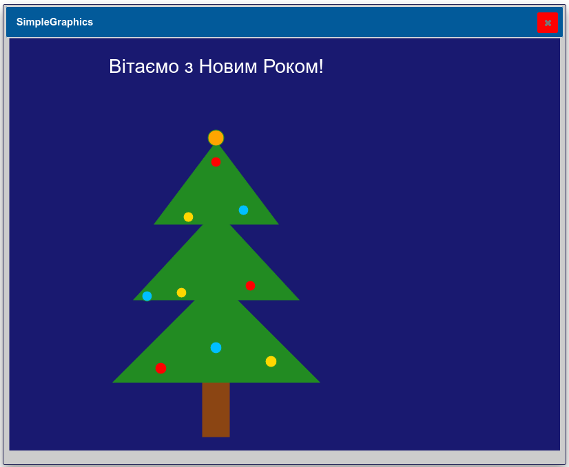
Tutorial 1: Drawing with the SimpleGraphics Library (SG_tutorial.pdf)
Tutorial 2: Using Images with the SimpleGraphics Library (image_tutorial.pdf)
simplegraphics-python на PyPI. pip install simplegraphics-python.